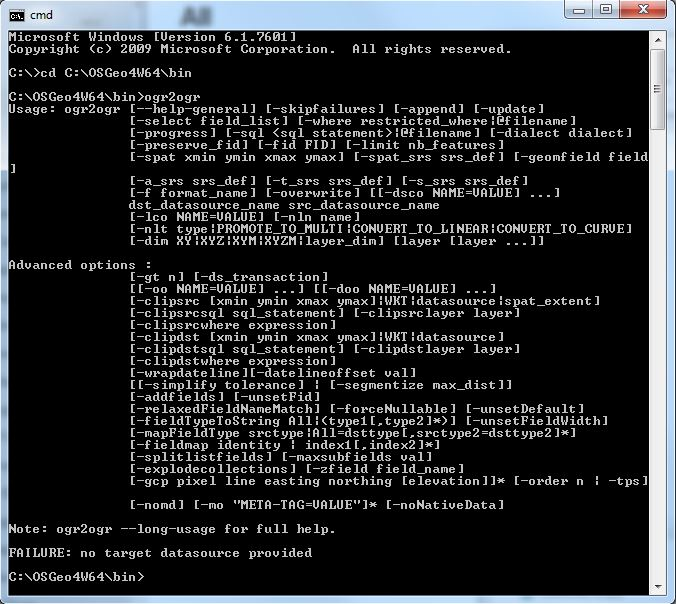

4. Loading spatial data¶
Supported by a wide variety of libraries and applications, PostGIS provides many options for loading data. This section will focus on the basics – loading shapefiles using ogr2ogr.
First, return to the Start menu, and search for cmd and launch cmd.exe. This is the windows command prompt.
In this guide I will assume you have installed QGIS using the OSGeo4W 64 bit installer (https://trac.osgeo.org/osgeo4w/).
Change Directroy into the same folder that contains ogr2ogr. Type:
cd C:\OSGeo4W64\binand hit return.Test it is working. Type: ogr2ogr and hit return. You should recieve the following error: FAILURE: no target datasource provided
The data can be downloaded from a GitHub repo: https://github.com/HeikkiVesanto/postgis_course_data
Download the data and unzip the file. Then run the following commands, making sure the modify them to include a full path to where nyc_postgis_data.gpkg is located on your computer. Make sure there are no spaces in the file path.
ogr2ogr -f "PostgreSQL" PG:"host=localhost user=postgres dbname=nyc password=postgres port=5432" -progress C:\download_files\postgis_course_data-master\nyc_postgis_data.gpkg nyc_census_blocksogr2ogr -f "PostgreSQL" PG:"host=localhost user=postgres dbname=nyc password=postgres port=5432" -progress C:\download_files\postgis_course_data-master\nyc_postgis_data.gpkg nyc_census_sociodataogr2ogr -f "PostgreSQL" PG:"host=localhost user=postgres dbname=nyc password=postgres port=5432" -progress C:\download_files\postgis_course_data-master\nyc_postgis_data.gpkg nyc_neighborhoodsogr2ogr -f "PostgreSQL" PG:"host=localhost user=postgres dbname=nyc password=postgres port=5432" -progress C:\download_files\postgis_course_data-master\nyc_postgis_data.gpkg nyc_streetsogr2ogr -f "PostgreSQL" PG:"host=localhost user=postgres dbname=nyc password=postgres port=5432" -progress C:\download_files\postgis_course_data-master\nyc_postgis_data.gpkg nyc_subway_stations
When all the files are loaded, click the “Refresh” button in pgAdmin to update the tree view. You should see your four tables show up in the Databases > nyc > Schemas > public > Tables section of the tree.
4.1. SRID 26918? What’s with that?¶
Most of the import process is self-explanatory, but even experienced GIS professionals can trip over an SRID.
An “SRID” stands for “Spatial Reference IDentifier.” It defines all the parameters of our data’s geographic coordinate system and projection. An SRID is convenient because it packs all the information about a map projection (which can be quite complex) into a single number.
You can see the definition of our workshop map projection by looking it up either in an online database,
or directly inside PostGIS with a query to the spatial_ref_sys table.
SELECT srtext FROM spatial_ref_sys WHERE srid = 26918;
Note
The PostGIS spatial_ref_sys table is an OGC-standard table that defines all the spatial reference systems known to the database. The data shipped with PostGIS, lists over 3000 known spatial reference systems and details needed to transform/re-project between them.
In both cases, you see a textual representation of the 26918 spatial reference system (pretty-printed here for clarity):
PROJCS["NAD83 / UTM zone 18N",
GEOGCS["NAD83",
DATUM["North_American_Datum_1983",
SPHEROID["GRS 1980",6378137,298.257222101,AUTHORITY["EPSG","7019"]],
AUTHORITY["EPSG","6269"]],
PRIMEM["Greenwich",0,AUTHORITY["EPSG","8901"]],
UNIT["degree",0.01745329251994328,AUTHORITY["EPSG","9122"]],
AUTHORITY["EPSG","4269"]],
UNIT["metre",1,AUTHORITY["EPSG","9001"]],
PROJECTION["Transverse_Mercator"],
PARAMETER["latitude_of_origin",0],
PARAMETER["central_meridian",-75],
PARAMETER["scale_factor",0.9996],
PARAMETER["false_easting",500000],
PARAMETER["false_northing",0],
AUTHORITY["EPSG","26918"],
AXIS["Easting",EAST],
AXIS["Northing",NORTH]]
If you open up the nyc_neighborhoods.prj file from the data directory, you’ll see the same projection definition.
A common problem for people getting started with PostGIS is figuring out what SRID number to use for their data. All they have is a .prj file. But how do humans translate a .prj file into the correct SRID number?
The easy answer is to use a computer. Plug the contents of the .prj file into http://prj2epsg.org. This will give you the number (or a list of numbers) that most closely match your projection definition. There aren’t numbers for every map projection in the world, but most common ones are contained within the prj2epsg database of standard numbers.
Data you receive from local agencies—such as New York City—will usually be in a local projection noted by “state plane” or “UTM”. Our projection is “Universal Transverse Mercator (UTM) Zone 18 North” or EPSG:26918.
4.2. Things to Try: View data using QGIS¶
QGIS, is a desktop GIS viewer/editor for quickly looking at data. You can view a number of data formats including flat shapefiles and a PostGIS database. Its graphical interface allows for easy exploration of your data, as well as simple testing and fast styling.
Try using this software to connect your PostGIS database. The application can be downloaded from http://qgis.org
Footnotes
| [1] | “Chapter 2.5. Installation” PostGIS Documentation <http://postgis.net/docs/manual-2.1/postgis_installation.html#PGInstall> |